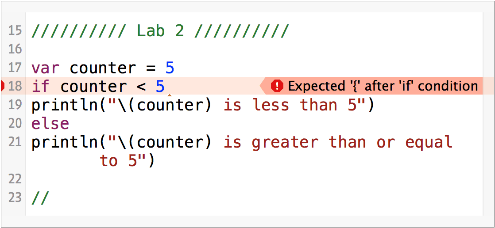

Developers cheered when they heard that Swift won't allow us to leave out the {}.

Swift has a special type for true and false: Bool.
You can make a Boolean variable like this.
1 | var isSpecial = true
|
You can also save the results of a Boolean condition into a variable.
1 2 3 4 5 6 7 8 9 | let big = 100
let test = 50
var isSmall = test < big
if isSmall {
println("It is small")
} else {
println("It is big")
}
|
To test if something is not true we use the Logical NOT Operator, the !. If we put a ! in front of something that's true the result will be false.
In the following Swift block, create a constant that holds a number. Write an if statement to see if the variable is NOT bigger than 100. Use the ! operator and not the != operator.